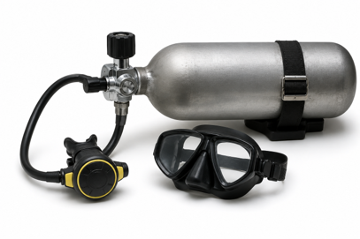
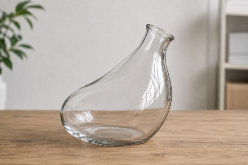
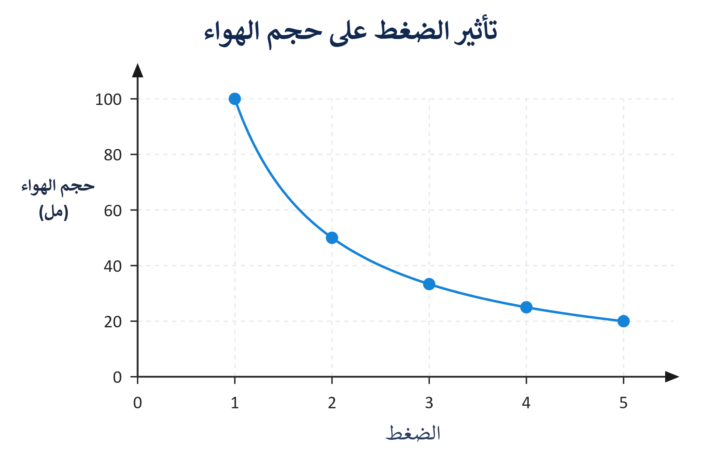
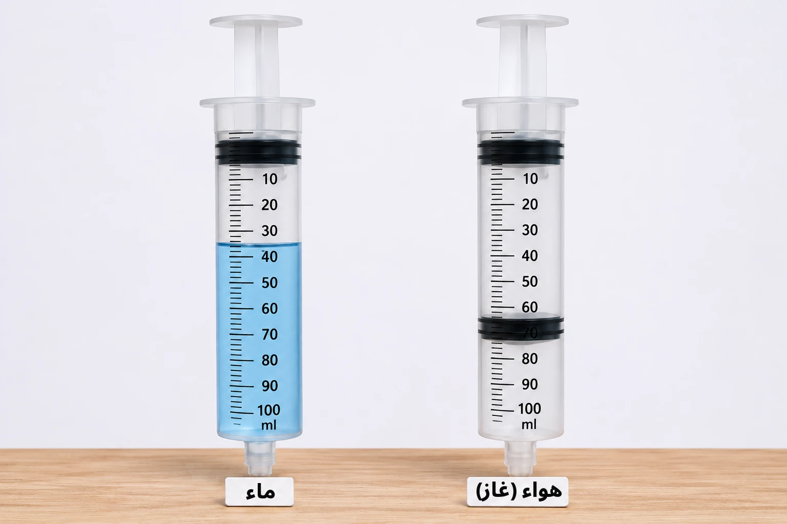

لا شيء يضاهي التدريب لتعزيز التعلّم.
وهناك تلميح منذ البداية! أجيبوا بشكل صحيح عن 3 أسئلة على الأقل للتقدّم.
هل يمكن تقليل حجم الهواء عن طريق تطبيق ضغط عليه؟

ارسموا خطًا بين كل حالة من حالات المادة والوصف المناسب لها.
أكملوا الكلمة الناقصة من بنك الكلمات:
للغاز شكل ثابت خاص به - فهو يأخذ شكل الوعاء الذي يوجد فيه.
بنك الكلمات:

عندما يصل طرد طلبتموه، يكون أحيانًا مبطّنًا بأكياس هواء مغلقة.
أيّ خاصية من خصائص الهواء تفسّر لماذا نبطّن بالهواء تحديدًا وليس بأكياس ماء؟
يا له من عمل رائع!
أنا واثق أنكم ستنجحون!وإن لم تنجحوا، فقد تعلّمتم شيئًا.
في التجربة، طُبِّق ضغط متزايد على الهواء المحبوس في المحقنة، وقِيس حجمه.
ما الاستنتاج الذي يمكن استخلاصه من الرسم البياني؟

تلميذة تريد أن تتحقق مما إذا كان الغاز قابلًا للانضغاط أكثر من السائل.
أي تجربة ستساعدها على اختبار ذلك بأفضل طريقة؟
